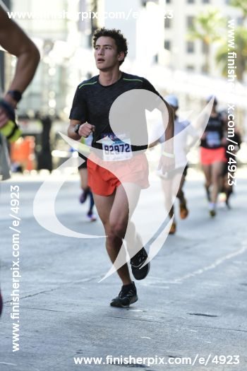
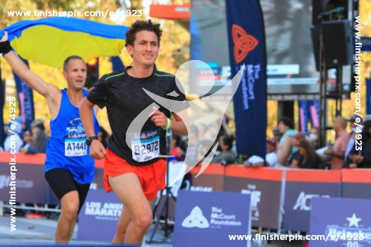
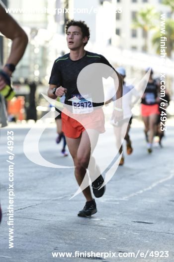
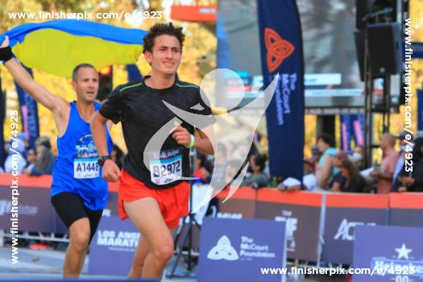

My Third Marathon
Los Angeles 2022
Final Time: 2:57:40
Description
At this point I've gotten pretty used to the distance, and I can pace myself pretty well. This marathon felt amazing, from start to finish. The course is much better than Long Beach or Surf City, and the abundance of spectators provides a vital source of motivation. I got a little emotional at the end because I saw that I had qualified for Boston, which had been my main running goal up until that point.
 


